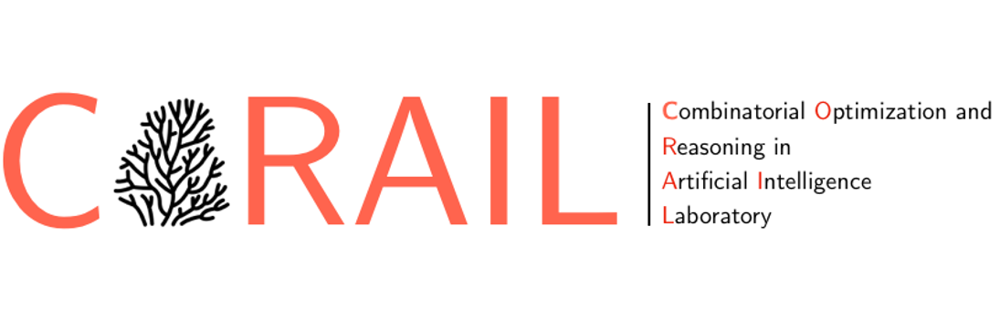
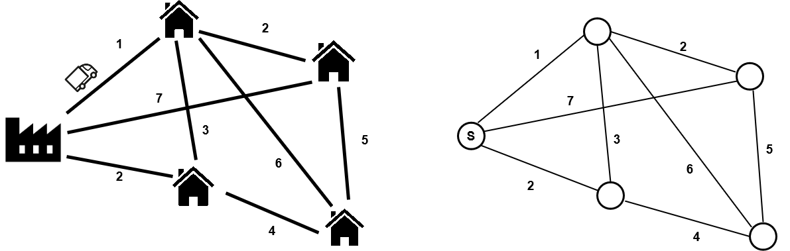
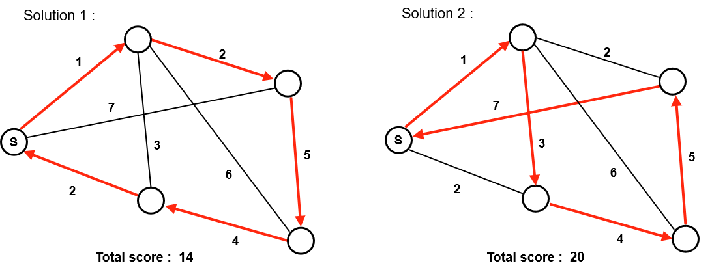
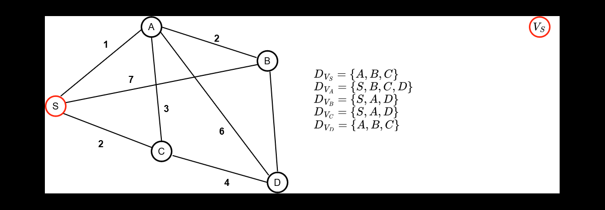
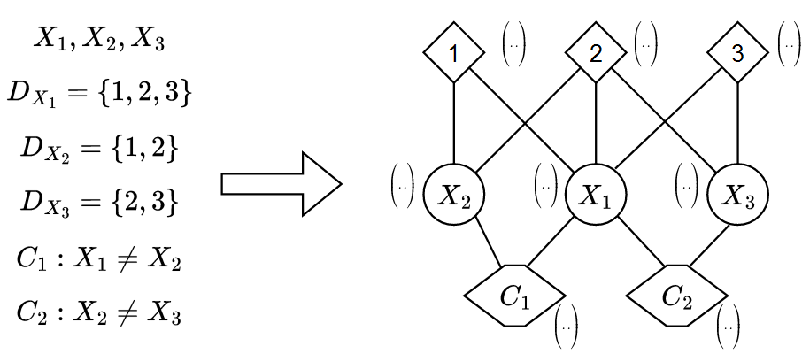
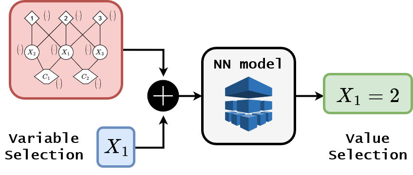
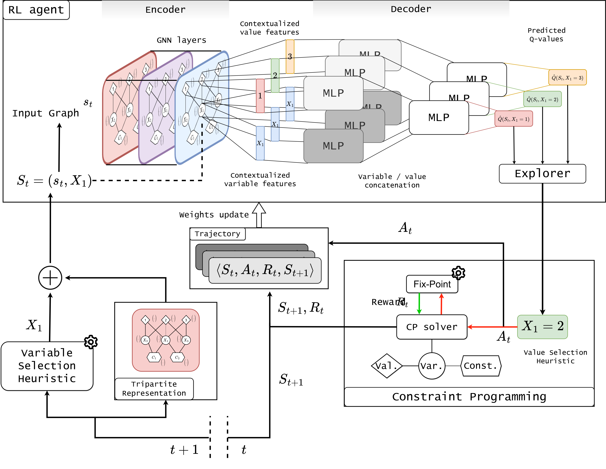

|

tom.marty@polymtl.ca
In a nutshell, SeaPearl is an intelligent generic solver guided by Reinforcement Learning (RL) to solve NP-hard discrete optimization problems using Constraint Programming.
At that moment, you can feel a little confused with all these concepts if you've never heard of them before. No worries, let's start from the beginning :).
What are discrete optimization problems ?
Discrete optimization problems are problems for which an outcome is to be optimized and for which there is a finite number of solutions. For example, consider the following problem :
A deliveryman has to deliver products from a factory to all the customers at varying distances from each other as detailed below (left).In practice, we represent the problem as a graph with values on edges (right). The goal for the deliveryman is to minimise the total distance travelled to deliver all the customers, this is the objective function of the problem under the constraint that every customer must be delivered.

Of course, there are several solutions to this problem and some are better than others : Here solution 1 is better than solution 2 because its route has a shorter total distance. For each problem, it could exist one or more optimal solutions, but prooving its optimality (ie. solving the problem) requires to have listed all possible solutions.

In this small problem it is possible to list all possible solutions and choose the best one, which become not possible anymore when considering larger problems with more nodes, as NP-complete class of problems, which TSP belongs to, could not be solved in polynomial time ( unless P = NP ).
That said, it may not be interesting to prove the optimality of a solution but simply to find good enough solutions. The proof of optimality is sacrificed for the benefit of execution time.
Constraint Programming
Now that we have introduced the notion of discrete optimisation problems, we will discuss a method used for searching solutions : constraint programming (CP). CP is a paradigm to solve discrete optimization problems. It lies on methods for problem declaration and problem solving using a solver that automates the constraint propagation mechanism (the process of inferring the possible values given the value of the variables already assigned, this is the process that everyone uses to solve a sudoku for example). For more information about it, please look at this presentation from Enric Rodrıguez-Carbonell .
the strength of the CP comes from the diversity of the problems it is able to solve. It allows, among other things, to manage non-linear constraints or variables of different types (boolean, integer ...).
To understand how the research works, let's go back to our problem above. Let's consider the deliveryman starts his delivery tour at the factory.
Each node of the graph can be considered as a variable of the problem. Each variable can take for values the node they are connected to, this define their domain of definition. FInally, constraints governs the values taken simultaneously by the variables (ex : You can't go through the same node twice.)
Below is how a search is conducted in a CP solver, which alternates decision phases and fix-point phases (constraints propagations) :
- The red assignations are the one obtained after a variable/value assignation
- The green assignations are the one infered directly by the constraint propagation mechanism

As can be seen, constraint propagation is a very powerful mechanism that allowed us to automatically infer the only possible values for 3 of the 5 variables in the problem.
During the decision phase, 2 decision heuristics are to be considered:
- Variable Selection Heuristic : Select the next variable to assign
- Value Selection Heuristic : Select the value to assign to the previously selected variable
The design of these heuristics can have a tremendous impact on search performance, this is what makes the difference between a advanced sudoku player, who will find a solution on the first try and a beginner, who do multiple errors and changes before finding a solution. Moreover, for some problems, we don't even know heuristics that works well in the general case.
This is where we bring
Reinforcement Learning !
How to learn a decision making process ?
The idea is to train a model using RL to learn a smart Value Selection Heuristic by solving successively thousands of similar problems drawn for a specific distribution and evaluate the performance of this heuristic on problems never seen during training. The resolution process still relies on CP, which guarantees the validity of the returned solutions, while the agent is in charge of branching during the search. We propose a generic approach where a single agent could learn problems of different nature, for this purpose we present a generic graph representation of any problems using the characteristics of CP problem definition.
The RL algorithm used is Deep Q-Learning (DQN). The associated reward is based on the objective function/quality of the solution returned.
Generic Graph representation :
Every CP problems is defined by a set of variable, values that can be taken by these variables and a set of Constraints on these variables. The idea is to encode each of these entities as node in a graph and connect these nodes according to whether :
- A Value is part of a Variable's domain of definition
- A Variable is involved in a Constraint
This graph is naturally dynamically updated throughout the resolution of instances during the training process. Here is a little example just to get a sense of things :

The advantage of this method is that it allows the entire information to be encoded in a structure (a graph) that can be processed by a Neural Network. Each node comes with node embeddings allowing to identify -among others- the type of constraints of a Constraint node or the value of a Value node.
Neural Pipeline for Variable/Value assignation :
Now that we defined our input, recall that our goal is to infer a variable/value assignation. Let's consider for the moment that the variable selection heuristic is deterministic, so that the input is the graph representation and a variable on which to branch. This is where we are :

Given a state, the RL agent is parameterized by a DQN-network that outputs the Q-values associated with every possible value selection in the domain of the selected variable $v$. The tripartite state is fed into a neural approximator model, the learner $\hat{Q}$, which consists of two parts : an encoder for learning contextual embeddings of the nodes of the graph representation, and a decoder which, given these node embeddings, estimates the optimal policy to design a powerful heuristic.
Graph neural network encoder :
Graph convolutional networks (GCN) constitute a very convenient solution to learn contextual node embeddings, and have been largely used for this purpose in reinforcement learning for discrete optimization. Due to the heterogeneous nature of our representation we opted for a heterogeneous GCN composed of several Graph convolutional layers.
Considering a variable $v_i$, a constraint $c_j$ and a value $u_k$, they are respectively defined by raw feature $V_i, C_j, U_k$, with respective dimension $d_v, d_c, d_u$ . First, a type-wise linear combination of raw features compute the input features of dimension $d$ for the GNN such that : $\mathbf{h}_{v_{i}}^{0} = V_{i}w_v$, $\mathbf{h}_{c_{j}}^{0} = C_{j}w_v$ and $\mathbf{h}_{u_{k}}^{0} = U_{k}w_v$.
Then, we perform recursively $N$ operations of graph convolution on the nodes of the graph representation. At step $t$, a convolution can be formulated as :
\begin{align*}
\mathbf{h}_{v_{i}}^{t+1}&=\phi_{v}\left(\mathbf{V}_{i}: \mathbf{h}_{v_{i}}^{t}: \bigoplus_{c_{j} \in \mathcal{N}_{c}\left(v_{i}\right)} \mathbf{h}_{c_{j}}^{t}: \bigoplus_{u_{k} \in \mathcal{N}_{u}\left(v_{i}\right)} \mathbf{h}_{u_{k}}^{t}V\right)\\
\mathbf{h}_{c_{j}}^{t+1}&=\phi_{c}\left(\mathbf{C}_{j}: \mathbf{h}_{c_{j}}^{t}: \bigoplus_{v_{i} \in \mathcal{N}_{v}\left(v_{i}\right)} \mathbf{h}_{v_{i}}^{t}\right)\\
\mathbf{h}_{u_{k}}^{t+1}&=\phi_{u}\left(\mathbf{U}_{k}: \mathbf{h}_{u_{k}}^{t}: \bigoplus_{v_{i} \in \mathcal{N}_{v}\left(v_{i}\right)} \mathbf{h}_{v_{i}}^{t}\right)
\end{align*}
Where $\phi_{v}, \phi_{c}, \phi_{u}$ are one-layer perceptron, composed by an affine transformation followed by an activation function, $:$ is the concatenation operation, $\mathcal{N}_{v},\mathcal{N}_{c},\mathcal{N}_{u}$ represents the type-specific neighborhood, and $\bigoplus$ is the feature-wise aggregation function.
Downstream neural network decoder :
Once the contextual node embeddings are computed, a decoder should be used to convert them into an actionable policy.
Our architecture consists in first transforming the embeddings of the variable $v$ currently branched on and all the possible values by feeding them into two different multi-layer perceptrons. The transformed embedding of each value $u \in \mathcal{D}_v$ concatenated with the transformed embedding of the branching variable $v$ passes trough a last multi-layer perceptron that outputs the approximated Q-value for each pair ($v$,$u$).
\begin{equation}
\hat{Q}(S_t,a) = \hat{Q}\left(\{s_t,v\},u) = \phi_q(\phi_v( \mathbf{h}_{v}^{N}):\phi_u( \mathbf{h}_{u}^{N})\right)
\end{equation}
where $\phi_{q}, \phi_{u}, \phi_{v}$ are multi-layer perceptron.
Once the Q-values are approximated, the explorer can exploit the learned values and voraciously choose the best action or decide otherwise (for example, a random action with probability $\epsilon$). This tradeoff between exploitation and exploration is necessary in early learning when the estimate of Q-values is very poor and many states have never been visited before.
Here is a summary of the value decision pipeline:

ajouter un point sur l'aspect générique de SeaPearl.
My website is still under construction. I will add the end of the explanations soon :) !
|
|